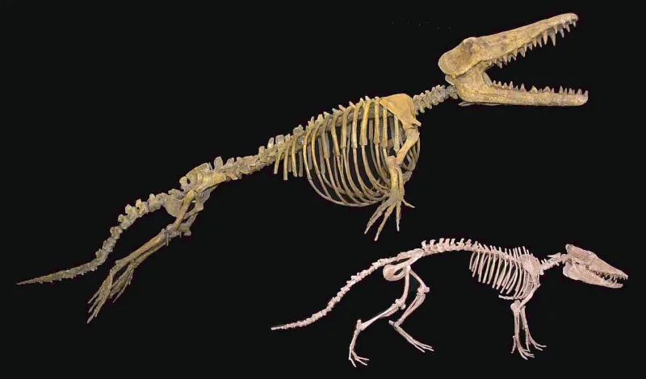
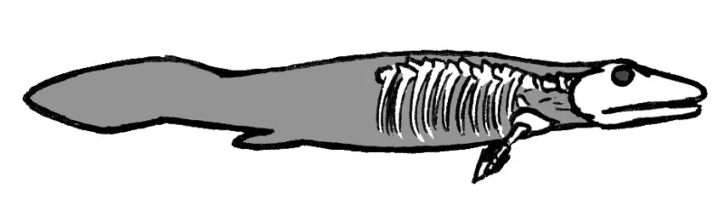

This Christian argument does not hold up. Drop it.
First: "there are no transitional fossils." That is not disputed. It is false.
Second: "evolution violates the second law of thermodynamics." That misuses physics.
Tiktaalik is a fish-tetrapod intermediate. It was found by predicting which rock layer and age to search in, which is the strongest kind of evidence there is.
Then Archaeopteryx. The therapsid sequence from reptile to mammal.
The whale series, from Pakicetus through Ambulocetus to Basilosaurus. The hominin record.
They are on display in museums. In an important sense every fossil population is transitional.
The second law governs closed systems. Earth is not one.
It receives a torrent of low-entropy sunlight. Local order increases all the time, in an embryo, a snowflake, a refrigerator, while total entropy still rises.
This one fails on the first page of any textbook.
Even major creationist bodies now list versions of these among arguments to avoid. Answers in Genesis publishes such a list.
TalkOrigins catalogues both claims: CC200 on transitional fossils, CF001 on the second law.
They are false and refuted, and this site says so plainly rather than hedging. The deeper issue is Augustine's, sixteen centuries old.
A Christian talking demonstrable nonsense about nature, "to the derision of unbelievers," teaches the unbeliever that the faith is nonsense too. Christians hold a range of views on origins.
None of them needs claims a first-year student can refute.
"Those two are wrong and I won't use them. Whatever you think about origins, that isn't the argument."


Tiktaalik was found where the theory said it would be, and the physics claim fails.
The skeptical rebuttal is settled science, not opinion. The transitional series are catalogued, physical and public. Tiktaalik was predicted by evolutionary theory before anyone found it. That is the strongest kind of evidence there is.
The thermodynamics claim fails on the first page of any textbook. Open systems that take in energy shed entropy all the time.
A skeptic who hears these two arguments draws a fair conclusion. The speaker either does not grasp the science, or does not care. He then files everything else the speaker says, the resurrection case included, under the same heading.
Don't use these two: they are false, and the Gospel pays for them.
Don't use — these are false and refuted, and this site says so plainly rather than hedging. TalkOrigins documents both. See CC200 on transitional fossils, and CF001 on the second law. Answers in Genesis lists them among arguments to avoid.
Christians hold a range of views on origins, as the science-and-Genesis entry sets out. None of those views needs, or is helped by, claims that are simply wrong. The cost is paid by the Gospel's good name, exactly as Augustine warned.